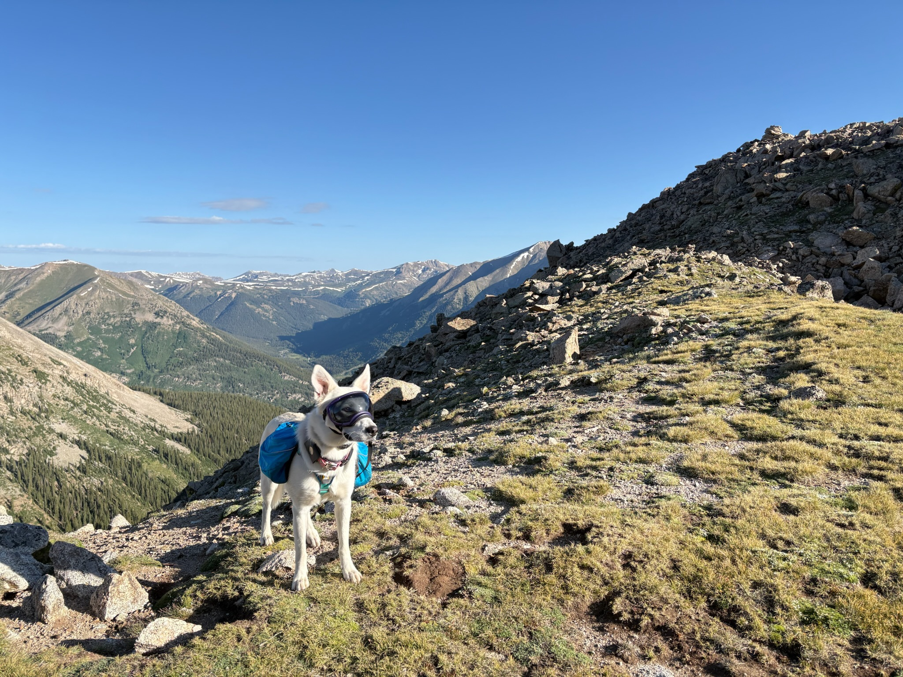

Move your cursor across each panel. Same input, different surface.

The photo itself leans into the scene as you move.
Image scaled 1.08, translated up to 14px
opposite the cursor. Lives inside one hero — both home & about share
the MarketingHero component, so one change covers both.
The topography texture behind the sheet slides under the cursor. The content sheet sits still — only the canvas moves.
background-position on the topo tile shifts up to
60px. One listener on <html> drives the
whole site — every page gets it for free.
Both respect prefers-reduced-motion (drift disabled). Touch
devices: inert (no pointer-move). Tune travel via the constants in script /
--bg-shift.